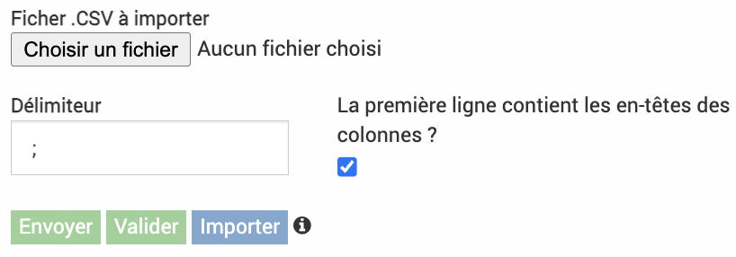

Imports
Procédure générale
La précédure pour les imports est similaire dans la majorité des cas (exeption des imports budgets et territoires) et suit la logique suivante :
Créer un fichier tableur avec l’outil de tableur privilégié (Excel, Numbers, Google Sheet, Calc…) et remplir les données avec les en-têtes de colonnes correspondantes
Sauvegarder au format csv
Importer dans EVA
Quelles colonnes pour chaque import ?
Des exemples de fichiers Excel et csv sont disponibles ici
L’ordre des colonnes n’a pas d’importance, certaines cases peuvent être vides si elles ne sont pas dans les colonnes de champs obligatoires.
Dans certaines colonnes, on peut indiquer un texte librement, pour d’autres seulement certains mots sont acceptés (indiqué en gras dans les tableaux ci-dessous) ou seulement des chiffres, les majuscules/minuscules sont importantes.
Les mots clés et référentiels peuvent s’ajouter dans des colonnes supplémentaires s’ils ont été paramétrés précédemment.
Import utilisateurs
Colonnes obligatoires : Prénom, Nom, Nom d’utilisateur, Rôle, Mot de passe
Autres colonnes possibles : Civilité, Adresse email, Couleur
+ les mots clés
Nom* |
Prénom* |
Nom d’utilisateur* |
Rôle |
Mot de passe |
Civilités |
Adresse |
Couleur |
|---|---|---|---|---|---|---|---|
Texte libre |
Texte libre |
Texte libre |
Nom du rôle prédéfini dans le module admin |
Texte libre |
Mr. ou Mme |
Texte format |
Code hex example : #fcba03 |
Import indicateurs
Colonnes obligatoires : Nom, Type, Opérateur de synthèse annuelle
Autres colonnes possibles : Archivé (oui ou non), Description, Définition, Méthode, Interprétation, Unité de mesure
+ les mots clés
Avertissement
Ne pas indiquer la colonne « Valeurs » (provoque un bug).
Nom* |
Type* |
Opérateur de synthèse annuelle* |
Archivé |
Description |
Unité de mesure |
|---|---|---|---|---|---|
Texte libre |
Libre Liste |
Somme Moyenne Médiane Maximum Minimum |
Oui Non (défaut non) |
Texte libre |
Texte libre |
Import contacts
Colonnes obligatoires : Prénom, Nom
Autres colonnes possibles : Adresse email, Téléphone, Portable, Adresse, ligne 1, Adresse, ligne 2, Code postal, Ville, Pays
+ les mots clés et groupe de champs additionnels
Avertissement
Bien choisir le « Nom » avec astérisque dans l’interface EVA pour la colonne Nom* et pas celui sans astérisque.
Civilité |
Prénom* |
Nom* |
Adresse |
Téléphone |
Adresse ligne 1 |
Code postal |
|---|---|---|---|---|---|---|
m ou mme |
Texte libre |
Texte libre |
Texte libre |
Texte libre |
Texte libre |
Texte libre |
Import structures
Colonnes obligatoires : Nom
Autres colonnes possibles : AAdresse email, Sigle, Numéro de téléphone, SIRET, Site web, « Adresse, ligne 1 », « Adresse, ligne 2 », Code postal, Ville, Pays
+ les mots clés
Avertissement
Ne pas indiquer la colonne « Téléphone secondaire », elle ne fonctionne pas.
Nom* |
Adresse |
Sigle |
SIRET |
Numéro de téléphone |
Adresse ligne 1 |
Code postal |
|---|---|---|---|---|---|---|
Texte libre |
Texte libre |
Texte libre |
Texte libre |
Texte libre |
Texte libre |
Texte libre |
Import fiches
Colonnes obligatoires : Titre
Autres colonnes possibles (en fonction des paramètres) : Statut, Code analytique, Chef(s) de projet, Validateur(s), (+ autre rôle si paramétré), Rattachement arboresence initiale (fiche qui doit déjà exister), Objectifs, Etat d’avancement du projet, Contexte et motif, Activité et livrables (en fonction du paramétrage des blocs dans les fiches), Maîtrise d’ouvrage externe, Accessible au réseau, Modèle de fiche (le nombre présent dans l’URL lorsque l’on consulte ce modèle), Statut financier (ID), Date de programmation, Date de démarrage prévue, Date de fin prévue, Date de démarrage effective, Date de fin effective, Territoires
+ les mots clés
Avertissement
Le niveau sera déduit en fonction du rattachement à l’arborescence initiale. Ne pas indiquer la colonne « équipe », elle ne se remplit pas avec les membres de l’équipe.
Statut |
Code Analytique |
Titre* |
Chef(s) de projet |
Rattachement arborescence |
Objectifs |
|---|---|---|---|---|---|
Brouillon A valider Validée Votée Refusée Archivée |
Texte libre |
Texte libre |
Nom de l’utilisateur -- Autre nom |
Nom exact d’une fiche qui doit déjà exister |
Texte libre |
Maîtrise d’ouvrage externe |
Accessible au réseau |
Modèle de fiche |
Date de programmation |
Territoires |
|---|---|---|---|---|
Oui Non (défaut non) |
Oui Non (défaut non) |
Nombre présent dans URL (ID) |
Date au format JJ/MM/AAAA |
Nom exact du territoire dans EVA |
Exemple URL du modèle de fiche : dans « Administration » puis « Modèles de fiches », cliquer sur le modèle souhaité, l’URL qui s’affiche ressemble à celui-ci « parc.evaparc.net/project/template/form/20 », dans ce cas indiquer « 20 » dans la case modèle de fiche.
Sauvegarder au format csv
Enregistrer le tableau au format csv avec des séparateurs en points-virgules. Le format CSV UTF-8 est à privilégier.
Vous pouvez vérifier le format en ouvrant le fichier csv avec un éditeur de texte simple (ex : TextEdit, WordPad, NotePad…).
Les colonnes doivent être séparées par des points-virgules, les lignes par des retours à la ligne.
Ex :
Statut;Code analytique;Titre
Brouillon;001;Fiche numéro 1
Importer dans EVA
Dans EVA, cliquer sur le bouton rouge dans le coin inférieur droit pour importer les csv  .
.
Choisir le fichier csv préparé précédemment, le délimiteur point-virgule, et cocher « La première ligne contient les en-têtes des colonnes ? » puis cliquer sur « Envoyer ».
{kind=link}
Les données devraient apparaître, chaque ligne correspondant à chaque élément.
{kind=link}
Vérifier les en-têtes des colonnes, certains auront déjà été trouvés, d’autres non, il faudra les indiquer grâce au menu déroulant.

Dans les suggestions d’en-tête du menu déroulant, on peut vérifier quels mots clés et référentiels peuvent être associés. Cliquer sur « Vérifier ou Valider ».
Si votre tableau est correct il sera surligné en vert, les lignes incorrects seront rouges.
{kind=link}
(Ici par exemple il faut indiquer « Mme. » au lieu de « mm » dans la colonne civilité pour corriger la ligne)
Vous pouvez les corriger ou si vous ne souhaitez pas importer ces lignes cliquer sur « Importer ». Seules les lignes qui étaient surlignées en vert seront importées dans EVA.
Une bonne pratique est de vérifier si l’import a bien eu lieu correctement.